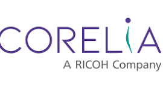
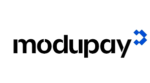
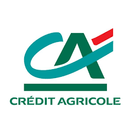
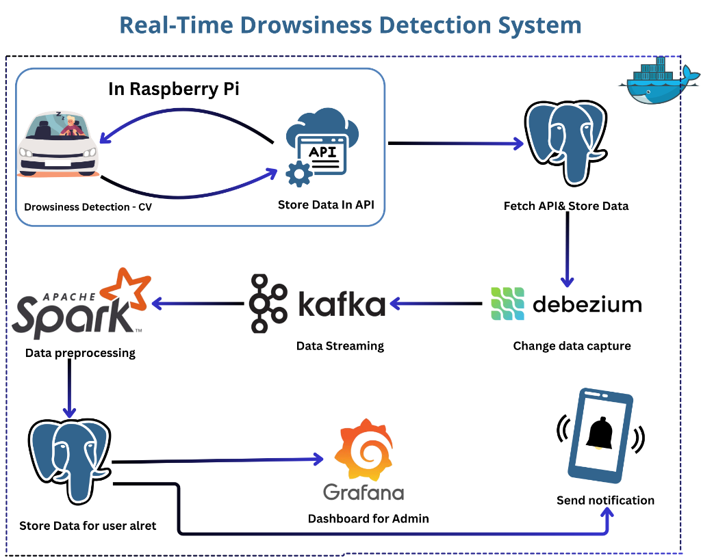
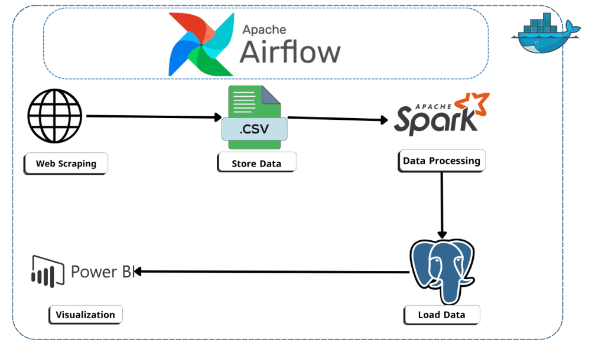

Specialized in designing robust data warehouses, ETL/ELT pipelines, and optimized data models to enable data-driven decision-making.
I am a Data Engineer with hands-on experience building scalable data platforms and processing large-scale datasets using Apache Spark and modern data stack tools. I specialize in designing data warehouses, ETL/ELT pipelines, and optimized data models for analytical and operational use cases.
I have a proven ability to process tens of millions of records, optimize query performance, and enable data-driven decision-making across multiple domains. Skilled in Python, PostgreSQL, and cloud-based data platforms including AWS and Databricks.
Currently, I am working at CORELIA building data infrastructure for AI pipelines and implementing large-scale ETL architectures. I am deeply passionate about modern data engineering practices, streaming architectures, and unlocking value from raw data.
I have successfully delivered over 12 freelance projects across Data Analytics, Data Engineering, and LLM solutions. Working with clients from Saudi Arabia and internationally, I provide reliable, end-to-end data architectures tailored to solve real business challenges.

Data Engineering & Data Platforms Project:
Data Infrastructure for AI Pipelines Project:


Built an Arabic AI chatbot using LLMs (Ollama) with RAG for domain-specific Q&A. Developed a complete data pipeline from Excel ingestion to vector database indexing, deployed via scalable FastAPI and Docker.

Developed a live eye-tracking system using AI vision models on Raspberry Pi. Built a real-time data streaming pipeline using Kafka, Spark Streaming, PostgreSQL, and Debezium, monitored via Grafana.

Automated ELT pipeline extracting multi-source job data using Airflow. Architected a Snowflake data warehouse and managed complex transformations using dbt, upgrading from a legacy single-source ETL design.
Designed an ERD schema for supermarket operations. Built a data warehouse and implemented ETL processes using SSIS. Developed interactive Power BI reports to deliver actionable business intelligence.
Leveraged Power BI to create dynamic financial reports offering a comprehensive overview of crucial financial metrics. The dashboard provides an intuitive interface to explore performance across various dimensions.
Analyzed breast cancer dataset to categorize condition stages based on tumor response to estrogen receptors. Assisted in providing data-driven insights for medical diagnostics.
Activities: Participated in the Egyptian Collegiate Programming Contest (ECPC) 2022 & 2023. Core Team Data Science at GDSC Al-Azhar University.